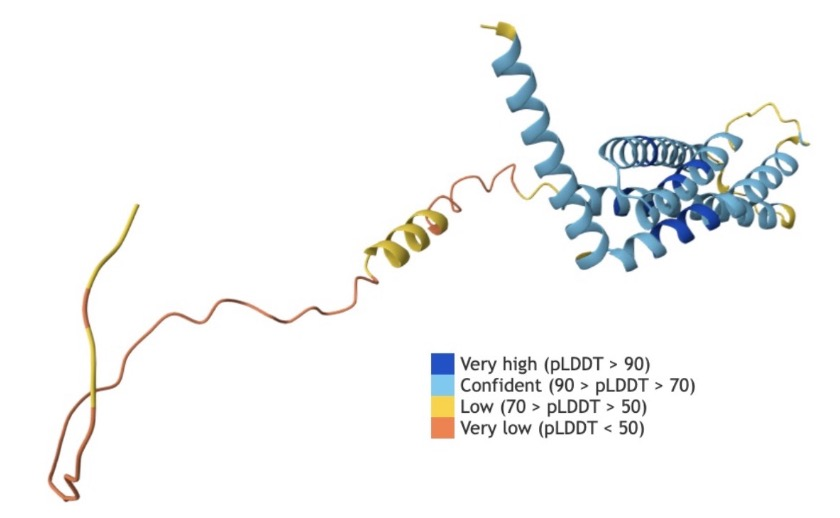

From predicting text to predicting the world.
The course began with a loop: given a context, predict a distribution over the next token. This page turns that engine on the world. The target is no longer a word but a protein's shape, a crystal's stability, a week of weather, or a theorem.
Science made AI possible in the first place: statistics, computation, data, and the habit of testing a model against the world. Now the loop runs the other way. Models trained to predict the world are being used to discover things in it.
The test is the overfitting test: a model that memorizes the training set fails on the next case; a model that learned the structure can extrapolate. In science, that extrapolation has a name — a hypothesis.
Prediction and discovery are the same act, seen from opposite ends.
A model compresses what is known; when the compression extrapolates, it proposes something that is not yet known.
AlphaFold: sequence in, shape out.
Protein folding — predicting a protein's three-dimensional shape from its amino-acid sequence — was a fifty-year grand challenge. AlphaFold 2 changed the picture at CASP14 in 2020, reaching accuracy competitive with experiment in a majority of cases (Jumper et al., 2021). The work was honoured with the 2024 Nobel Prize in Chemistry (Nobel Prize, 2024).
The database now offers open access to over 200 million predicted structures (AlphaFold DB). AlphaFold 3 extends the same idea to complexes of proteins, nucleic acids, small molecules, ions, and modified residues (Abramson et al., 2024). AlphaMissense turns the machinery on variation: it predicts the effect of missense variants across the human proteome (Cheng et al., 2023).
The most important output is not the ribbon diagram. It is the confidence. AlphaFold reports a per-residue score called pLDDT. A high score means the model is confident about that part of the chain; a low score often marks a disordered tail or a region the model cannot pin down. The structure comes with a map of where it is guessing.


Where the model is guessing · demo
Each cell is a predicted contact; each bar is the model's confidence for one residue. Lower the threshold and watch the uncertain tails fall away.
Click a residue in the map or a bar to inspect it.
Materials, weather, mathematics.
Materials. GNoME, a graph network trained on crystal structures, predicted 2.2 million structures below the current convex hull — an order-of-magnitude expansion of the stable materials known to humanity. Of those, 736 had already been independently realized experimentally when the paper was published (Merchant et al., 2023). The output is a shortlist for synthesis, not a guarantee.
Weather. FourCastNet produces a week-long global forecast in under two seconds, matching the ECMWF physics model at short lead times for large-scale variables and outperforming it on some fine-scale fields such as precipitation (Pathak et al., 2022). The point is not that physics is obsolete; it is that a learned surrogate can explore many more scenarios in the same time.
Mathematics. AlphaTensor found faster, provably correct matrix-multiplication algorithms (Fawzi et al., 2022). FunSearch found new constructions for open problems by searching over programs (Romera-Paredes et al., 2024). AlphaEvolve extended the pattern to a broad set of open problems (Georgiev et al., 2025), and AlphaGeometry2 reached an average gold-medalist level on Olympiad geometry (Chervonyi et al., 2025). The 2024 IMO system reached silver-medal standard (DeepMind, 2024).
What counts as a discovery?
A proposal is not a discovery until someone can check it. A protein structure is checked against experiment; a material is synthesized; a proof is formalized in a proof assistant; a forecast is compared with what the atmosphere actually did. The model can generate candidates much faster than the world can verify them, which makes verification the scarce resource.
The 2026 Navier–Stokes episode is a cautionary tale. OpenAI reported that a multi-agent system produced an analytic proof, with a Lean formalization, of a finite-time singularity for the equations (OpenAI, 2026). The result was not yet peer-reviewed, and its priority was disputed (Navier–Stokes priority controversy). Later analysis argued that the Lean formalization did not faithfully match the natural-language proof (Bastounis et al., 2026). The episode does not make the work worthless; it shows that even a machine-checked artifact is not the same as a checked discovery.
That is the same distinction hallucination made: plausible is not true. In science, the distinction has teeth, because the world can say no.
AI makes proposals cheap. It does not make truth cheap.
The scientist's job moves toward choosing the right questions, designing the check, and deciding what the result means.
The short version.
The model can point. The world has to confirm.
Prediction becomes discovery only when the proposal survives a check — an experiment, a synthesis, a proof, or a measurement.
Next: the people behind the machine. Or step back to the whole arc.